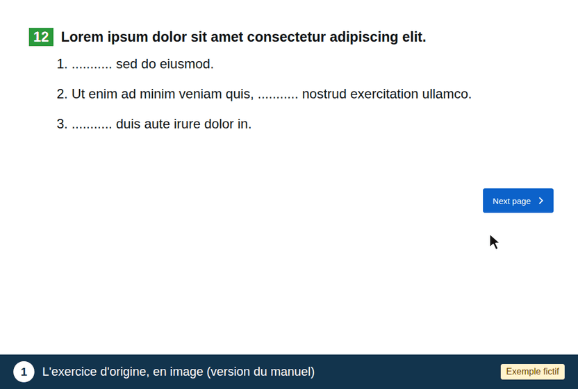

Évaluation des exercices adaptés
Vous allez évaluer 16 exercices, présentés dans un ordre aléatoire. Mettez-vous à la place d'un enfant dyspraxique.
Dans l'animation (contenu fictif), suivez les 3 étapes du bandeau bleu :
Il n'y a pas de bonne ou de mauvaise réponse, et ce que vous faites dans l'exercice n'est pas enregistré. Vous ne pourrez pas revenir aux pages précédentes.
